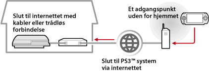

Netværk > Brug af Remote Play (via internettet)
Brug af Remote Play (via internettet)
For at kunne bruge denne funktion, kan det være nødvendigt at opdatere systemsoftwaren på dit PS3™-system og PSP™-system.
Brug dit PSP™-system og et trådløst adgangspunkt (f.eks. det, der findes via et almindeligt tilgængeligt trådløst hotspot (trådløst LAN)) til at oprette forbindelse til dit PS3™ system i hjemmet via internettet. Hvis du vil bruge Remote Play, når du ikke er hjemme, skal dit PS3™ system være i standby og indstillet til Remote Play.

Tip
Fremgangsmåden til brug af servicen til et almindeligt tilgængeligt trådløst hotspot (trådløst LAN) og brugstaksten afhænger af serviceudbyderen. Yderligere oplysninger fås hos din serviceudbyder.
Klargøring (1) (PS3™- og PSP™-systemer)
Første gang du bruger Remote Play, skal du registrere (parre) PSP™-systemet med dit PS3™ system. Registrer systemet under  (Indstillinger) >
(Indstillinger) >  (Remote Play indstillinger) > [Registrer enhed].
(Remote Play indstillinger) > [Registrer enhed].
Klargøring (2) (PS3™-system)
Indstil PS3™-systemet til at gå standby. Du skal indstille [fjernstyret start] til [Til], så dit PS3™-system kan tændes fra PSP™-systemet.
1. |
Følg nedenstående fremgangsmåde på PS3™-systemet:
|
|---|---|
2. |
Sluk PS3™-systemet. |
 (Brugere).
(Brugere). (Sluk system) for at slukke systemet og sætte det på standby. Kontroller, om strømindikatoren lyser rødt hele tiden.
(Sluk system) for at slukke systemet og sætte det på standby. Kontroller, om strømindikatoren lyser rødt hele tiden.Tip
For yderligere oplysninger om de indstillinger, der er beskrevet i pkt. 1, henvises til (Indstillinger) > (Remote Play indstillinger) > [fjernstyret start] i denne vejledning.
Klargøring (3) (PSP™-system)
Opret en netværksforbindelse for at slutte PSP™-systemet til et adgangspunkt. Hvis du vil bruge Remote Play via internettet, kan du bruge et adgangspunkt, f.eks. et almindeligt tilgængeligt hotspot (trådløst LAN). Yderligere oplysninger findes i brugervejledningen til PSP™-systemet.
Brug af Remote Play
1. |
På PSP™-systemet vælges |
|---|---|
2. |
Vælg [Connect via Internet]. |
3. |
Gå til listen over forbindelser, og vælg den forbindelse, som adgangspunktet skal bruge til Remote Play. |
4. |
Indtast det PlayStation®Network Log ind-ID og den adgangskode, der bruges til den pågældende konto i PS3™-systemet.
|
 (Netværk) >
(Netværk) >  (Remote Play).
(Remote Play).
Afslutning af Remote Play
Tryk på PS-tasten (HOME-tasten) på PSP™-systemet, og vælg derefter [Quit Remote Play] > [Afslut og sluk for PS3™-systemet].
Tip
Vælg [Quit Without Turning Off the PS3™ System], hvis du bruger PS3™-systemet til at kopiere filer eller udføre download i baggrunden og andre opgaver, der kræver, at systemet er tændt.
Brug af Remote Play via internettet
Du kan muligvis ikke bruge Remote Play via internettet, afhængigt af den pågældende netværksenhed. Hvis dette sker, skal du kontrollere følgende.
- Brug [Test af Internetforbindelse] i
 (Netværksindstillinger) under (Indstillinger) til at kontrollere, at PSP™-systemet kan oprette forbindelse til internettet og PlayStation®Network.
(Netværksindstillinger) under (Indstillinger) til at kontrollere, at PSP™-systemet kan oprette forbindelse til internettet og PlayStation®Network. - Hvis din router understøtter UPnP, skal du aktivere dens UPnP-funktion.
- Hvis din rounter ikke understøtter UPnP, skal du indstille dens "port forwarding" til at tillade kommunikation med dit PS3™ system via internettet. Portnummeret til Remote Play er TCP: 9293. Yderligere oplysninger om angivelse af denne indstilling findes i den vejledning, der fulgte med routeren.
- "Port forwarding" er en funktion, der videresender signaler til en bestemt port (indgang) til en anden port (udgang). Dette kaldes også "port mapping" eller "adressekonvertering".
- Det er ikke sikkert, at kommunikationen fungerer korrekt, hvis dit PS3™ system er tilsluttet internettet via to eller flere routere.
Tips
- En router er en enhed, der gør det muligt for flere enheder at dele en enkelt internetforbindelse.
- Kommunikationen kan være begrænset af eventuelle sikkerhedsfunktioner, der findes i routeren, eller som er fastsat af internetudbyderen. Læs de vejledninger, der fulgte med den pågældende netværksenhed, og læs også oplysningerne fra internetudbyderen.